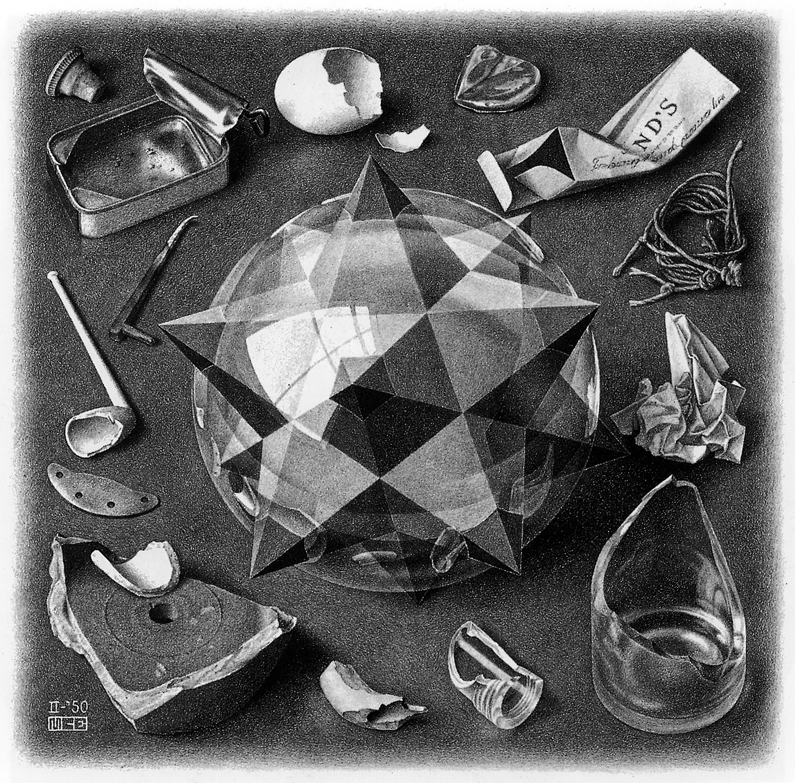

KATEDRA METOD MATEMATYCZNYCH FIZYKI
SEMINARIUM
TEORIA DWOISTOŚCI
TEORIA DWOISTOŚCI

Czas i miejsce:
czwartki, 10:15–12:00;
Sala 2.23 w głównym budynku Wydziału Fizyki UW przy ul. Pasteura 5 (II piętro), Warszawa
| 26.2.2015 | Jan Dereziński (KMMF WFUW) | Dlaczego kwantyzacja Weyla jest najlepsza? |
| 5.3.2015 | Paweł Jakubczyk (IFT WFUW) | Functional renormalization group: two applications |
| 12.3.2015 | Jerzy Lewandowski (IFT WFUW) | Connections and parallel transports |
| 19.3.2015 | Piotr J. Durka (ZFB WFUW) | Interfejsy mózg-komputer, technologie asystujące i analiza sygnałów |
| 26.3.2015 | Krzysztof Turzyński (IFT WFUW) | Angels, demons and physics: in search of the dark matter particle |
| 2.4.2015 | Katedralne Spotkanie Wielkanocno-Pesachowe | – |
| 9.4.2015 | Katarzyna Rejzner (Department of Mathematics, University of York) | Renormalization without infinities and algebraic structures in quantum field theory |
| 16.4.2015 | Neil Lambert (King's College London oraz Profesor wizytujący WFUW) | M-branes |
| 23.4.2015 | Paweł Kasprzak (KMMF WFUW) | Groups, von Neumann algebras and Herz restriction theorem |
| 30.4.2015 | Paweł Nurowski (Centrum Fizyki Teoretycznej) | On Penrose's Conformal Cyclic Cosmology |
| 7.5.2015 | Wojciech Kamiński (IFT WFUW) | Quantum energy inequalities |
| 14.5.2015 | ||
| 21.5.2015 | Daniel Siemssen (Riemann Fellow, Universität Hannover) | Construction of Hadamard states on asymptotically flat spacetimes |
| 28.5.2015 | Paweł Duch (Wydział Fizyki, Astronomii i Informatyki Stosowanej, Uniwersytet Jagielloński) | The construction of scattering states for massless particles in quantum field theory |
| 11.6.2015 | Mikołaj Rotkiewicz (IM PAN) | Models for higher algebroids |
Strona ostatnio odświeżana 18. września 2015 r.